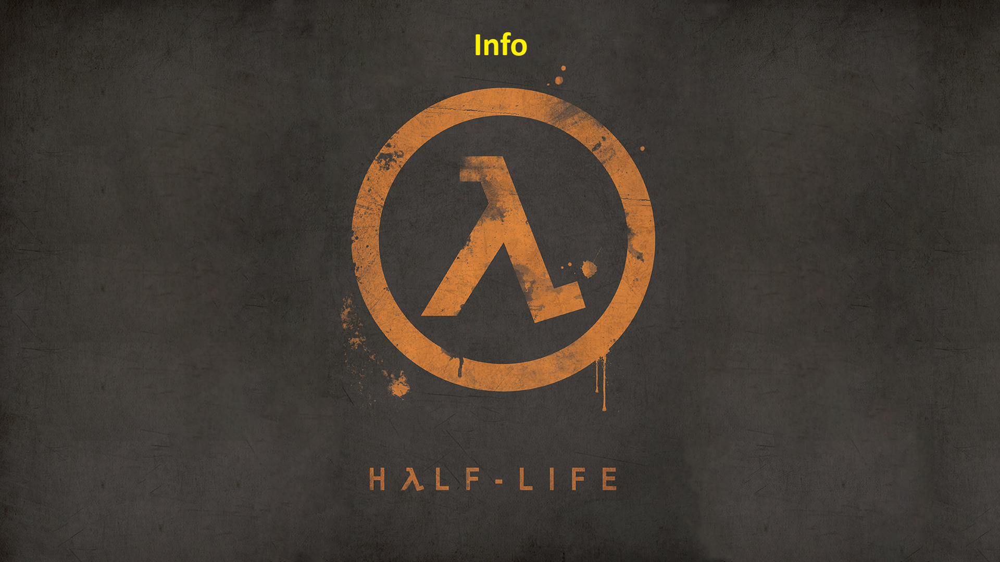

Вступление
Half-Life) — компьютерная игра в жанре научно-фантастического шутера от первого лица,
разработанная американской компанией Valve Corporation и изданная компанией Sierra Studios 19 ноября 1998 года для персональных компьютеров.
Первая игра в серии Half-Life. Технически основана на значительно переработанном движке Quake от id Software.
В 2001 году студия Gearbox Software портировала Half-Life на консоль PlayStation 2.
Также игра разрабатывалась для платформы Sega Dreamcast, но релиз был отменён.
В январе 2013 года Valve портировала игру на Linux и OS X. Игра Black Mesa (2020), разработанная студией Crowbar Collective, представляет собой переработанный и расширенный ремейк оригинальной игры Half-Life
Half-Life стала одной из первых игр, в которых сюжет развивается полностью внутри игрового пространства без использования видеозаставок
Игровые издания высоко оценили новаторский стиль повествования, являющийся главным достоинством игры.
Другой сильной стороной игры называют искусственный интеллект противников. Half-Life является одной из первых игр,
где у игрока появились союзники. Многие издания отмечают, что данная игра произвела революцию в жанре шутера от первого лица и положила начало новому этапу его развития.
Игра получила большое количество положительных отзывов от игровой прессы. Более 50 игровых изданий признали Half-Life «Игрой года», а журнал PC Gamer трижды называл её «лучшей игрой из когда-либо созданных».
На волне успеха игры были выпущены несколько дополнений:
Half-Life: Opposing Force, Half-Life: Blue Shift и Half-Life: Decay.
Кроме того, было создано много официальных модификаций, в том числе сетевых: Counter-Strike, Team Fortress Classic, Deathmatch Classic, Day of Defeat, Ricochet.
В 2004 году было выпущено продолжение — Half-Life 2, также признанное «Игрой года» большинством изданий.
Основная информация по Half-Life
Сюжет Half-Life
История игры рассказывается без помощи кат-сцен,
разрывов во времени и подобных им приёмов.
Развитие сюжета происходит при помощи скриптовых сцен, функционирующих непосредственно внутри игрового действия.
Игровой процесс и подача сюжета при таком подходе образуют единое целое.
Игра не разделена на уровни или миссии; деление игрового мира на карты вызвано техническими ограничениями.
За всеми событиями игрок наблюдает глазами главного героя — Гордона Фримена.
Выслушивая очередной монолог или же наблюдая за важным сюжетным событием, игрок не утрачивает контроль над главным героем, за исключением нескольких скриптовых сцен.
В то же время самого персонажа нельзя увидеть со стороны или услышать его голос.
Все эти приёмы способствуют погружению игрока в игровую реальность, создавая эффект присутствия.
Большое влияние на сюжетную линию и угнетающую атмосферу Half-Life оказал сериал «За гранью возможного»,
особенно серия «Пограничная полоса»,
а концепция игры родилась под впечатлением от повести Стивена Кинга «Туман» и сериала «Секретные материалы».
Предыстория и завязка сюжета
Действие игры происходит в гигантском сверхсекретном научно-исследовательском комплексе «Black Mesa»,
который находится в недрах горы, расположенной в американском штате Нью-Мексико.
Действующий персонаж игры — молодой талантливый, а главное-НЕМОЙ научный сотрудник, доктор философии в области теоретической физики Гордон Фримен,
работающий в Лаборатории аномальных материалов, которая находится в Чёрной Мезе.
Главы смотрите здесь
Спидраны Half-Life
Спидраннинг - это прохождение компьютерной игры за наименьший промежуток времени в рамках соревнования или для развлечения.
Конкретная попытка прохождения называется спидраном.
При скоростном прохождении игрок проявляет не только своё мастерство,
но часто использует необычные для данной игры трюки и не предусмотренные разработчиками особенности игры.
Для демонстрации создаются записи скоростных прохождений в одном из видеоформатов либо в формате демо-файла самой игры.
Стремясь сократить время прохождения, игрок пропускает возможные ответвления сюжетной линии, зачастую вообще разрывая её,
прерывает любые видеовставки. Иногда игра позволяет выполнять недокументированное разработчиком действие,
которое в ряде условий помогает сократить время, затрачиваемое на прохождение уровня. Некоторые уровни могут быть разработаны таким образом,
что до некоторых областей (например, выход из уровня), до которых нужно добираться кружным путём, существует более короткий путь.
Иногда из-за недоработок в программном коде игры появляется возможность совершать действия, недоступные в обычных условиях
(например, проходить сквозь стены или прыгать на большое расстояние).
Тоже НАШ СЛОНЯРА поясняет за спидраны ХЛ...
Всё!